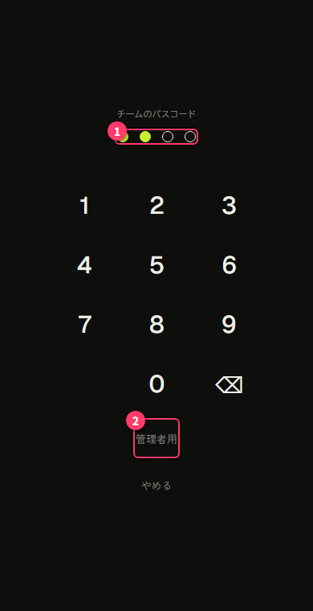
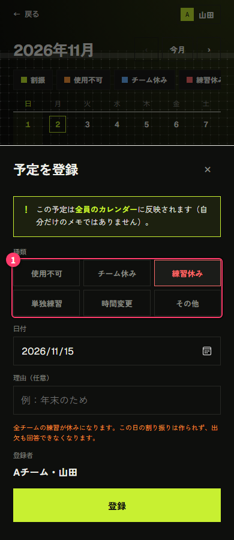
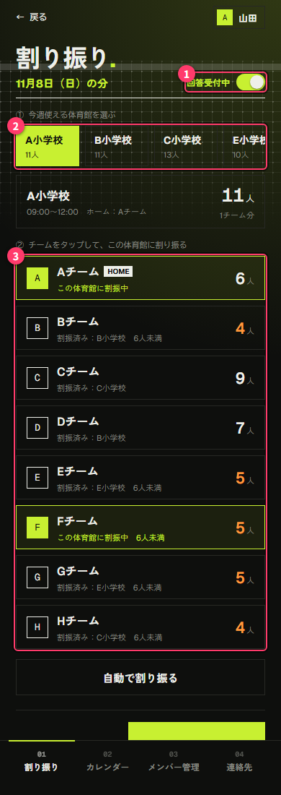
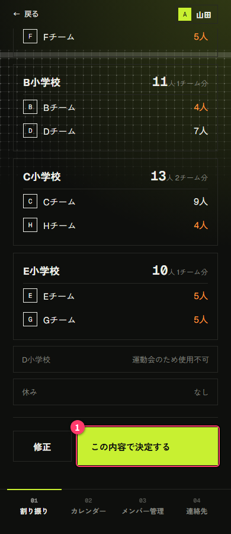
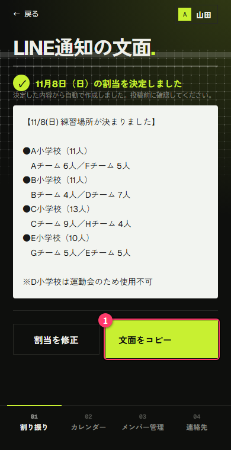

Attendance 割当者ガイド(割当担当・チーム代表向け).
管理画面の使い方をまとめています。メンバーとしての使い方(出欠の回答など)は「ユーザーガイド」を見てください。このガイドは、アプリの右上の名前 →「使い方」からも開けます(パスを入力した端末のみ)。
- チーム代表: メンバー管理、連絡先、カレンダーの章を読んでください
- 割当担当: 上に加えて、「割り振り」の章を読んでください
パスは、管理者から個別に受け取ってください。このガイドには記載しません。人に見られる場所(グループのトークなど)には書かないでください。
1. 管理画面に入る
- 下の「管理画面」タブをタップします
- チームのパス(数字4桁)を入力します(①。入力した数は●で表示されます)

- 一度入力すると、その端末では次から入力なしで管理画面に入れます。期限はありません
- 管理者がチームのパスを変更したときは、もう一度入力が必要です
- 「← 戻る」でメンバー用の画面(ホーム)に戻れます
管理画面の下のタブ:
| タブ | 使える人 | できること |
|---|---|---|
| 割り振り | 割当担当のチームだけ | 次の日曜の体育館の割当 |
| カレンダー | パスを持つ全員 | 予定の登録・修正 |
| メンバー管理 | パスを持つ全員(自分のチームのみ) | 名簿、連絡先、ホームの設定 |
| 連絡先 | パスを持つ全員 | 各チームの代表・副代表の連絡先を見る |
「割り振り」タブが出ないときは、あなたのチームが割当担当に設定されていません。管理者に相談してください。
パス入力を解除する
借りた端末や共有の端末で使ったあとは、パス入力を解除してください。
- 右上の名前をタップします
- 「パス入力を解除する」を押します
- 解除しても、ホームの表示や出欠の回答はこれまでどおり使えます
- パスそのものや、他の端末、登録したデータには影響しません
2. メンバー管理(チーム代表)
自分のチームの名簿を管理します。他のチームは操作できません。
名簿
| 操作 | 方法 |
|---|---|
| 追加 | 下の入力欄に名前を入れて「追加」 |
| 名前の変更 | 「編集」から変更して「保存」 |
| 在籍/休部の切り替え | 名前をタップ(または「編集」の中で選ぶ) |
| 削除 | 「削除」(退部した人など) |
- 休部にした人は、ホームの出欠で「未回答」に数えられません。回答した場合は数に入ります
- 一時的に来ない人は、削除ではなく休部にしておくと、戻ったときに元に戻すだけで済みます
連絡先(代表・副代表)
名前を名簿から選び、電話番号や LINE ID などを入れて「保存」を押します。
- 他のチームのパスを持つ人(代表や割当担当)にも見えます。 メンバー用の画面には表示されません
- 連絡先は端末には保存されず、見るたびにサーバーから読み込みます
ホーム(体育館と使用時間)
チームが普段使う体育館と時間を設定し、「保存」を押します。割り振りでは、この体育館と時間が1つの練習場所(練習枠)になります。
- 時間の初期値は、練習時間の基本の 13:00〜17:00 です。違う場合だけ変えてください
- 特定の日だけ時間が変わるときは、ここではなく、カレンダーの「時間変更」で登録します(割当担当)
- 他のチームと同じ体育館・同じ時間にすると、そのチームと一緒の枠になります
- 同じ体育館でも時間が違えば、別の練習場所として扱われます
- 選べる体育館の一覧は管理者が管理しています。ない場合は管理者に依頼してください
3. 連絡先
全チームの代表・副代表の連絡先が並びます。
- 電話番号やメールアドレスはタップすると電話・メールが開きます
- LINE ID などはタップするとコピーされます
4. カレンダー
メンバー用のカレンダーと同じ画面で、予定を登録・修正できます(使い方は「ユーザーガイド」の6章)。
| 種類 | 登録できる人 | 入れる内容 | 割り振りへの影響 |
|---|---|---|---|
| 使用不可 | 全員 | 体育館と理由(学校行事など) | その日、その体育館は割り振りに出ません |
| チーム休み | 全員 | 自分のチームと理由(大会など) | その日、そのチームは「休み」になります |
| 単独練習 | 全員 | チーム、時間、場所(任意) | その日、そのチームは割り振りの対象外になります |
| 練習休み | 割当担当 | 理由(任意) | その日は全チームが休み。割り振りは作られず、出欠も回答できなくなります |
| 時間変更 | 割当担当 | 練習枠と新しい時間 | その日、その練習枠の時間が変わります |
| その他 | 全員 | 内容(代表者ミーティングなど) | なし |
割り振りへの影響をまとめると、次のとおりです。

- 使用不可は、まず自分のチームのホームが表示されます。他のチームの体育館を代わりに登録することもできます
- 単独練習・練習休み・時間変更は、練習日(日曜)だけ登録できます
- 単独練習のチームは、自分のチーム以外も選べます。登録すると、そのチームのホームに「単独練習」と時間・場所が表示されます
- 割当担当は、割振を作ったあとの次の日曜にも、使用不可・チーム休み・単独練習を登録できます。メンバーやチーム代表はできません
- 練習休みと時間変更は、管理画面のカレンダーでだけ登録・修正・削除できます(割当担当のチームのみ)
- 練習休みは、確定済みの週には登録できません。先に割り振りの「確定を解除」をしてください
- 時間変更は、確定済みの週にも登録できます。メンバーのホーム、Google カレンダーの予定にも反映されます。LINE では改めて知らせてください
5. 割り振り(割当担当)
次の日曜に、どのチームをどの体育館で練習させるかを決めます。
毎週の流れ
- 1回答を受け付けるメンバーが出欠を回答する。画面右上のスイッチは「回答受付中」
- 2締め切る割当担当がスイッチを「締め切り中」にする。メンバーは回答を変えられなくなる
- 3割り振る割当担当が、体育館ごとにチームを入れる
- 4決定する「最終確認へ」で内容を確かめ、「この内容で決定する」。メンバーのホームに体育館が出る
- 5LINE で知らせる表示された文面をコピーして、LINE に投稿する

① 回答の受付と締め切り
右上のスイッチ(画像の①)で切り替えます。
- 回答受付中: メンバーが出欠を回答・変更できます
- 締め切り中: メンバーはその週の回答を変えられません。スイッチを戻せば、受付を再開できます
- 締め切りの時刻は決まっていません。割当担当が判断して締め切ってください
② 体育館を選んで、チームを割り振る
- 「① 今週使える体育館を選ぶ」(画像の②)で体育館をタップします。体育館ごとに、割り振った人数の合計が出ます
- 「② チームをタップして、この体育館に割り振る」(画像の③)で、その体育館に入れるチームをタップします
チームの表示の見方:
| 表示 | 意味 |
|---|---|
| HOME | その体育館がホームのチーム |
| この体育館に割振中 | 今選んでいる体育館に入っている |
| 割振済み:◯◯ | 別の体育館に入っている(タップすると移すか確認されます) |
| 未割当 | まだどこにも入っていない |
| 休み | カレンダーでチーム休みが登録されている(割り振れません) |
| 単独練習 | カレンダーで単独練習が登録されている(割り振れません) |
| 6人未満 | 参加が6人に届いていない |
- 人数は「参加」と回答した人の数です
- 6人以上が、1チームで練習できる目安です。足りないチームは、他のチームと同じ体育館にまとめてください
- 使用不可が登録されている体育館は、理由とともに灰色で表示され、選べません
- 「自動で割り振る」を押すと、ホームなどをもとにした案に組み直します。それまでの手作業の割り振りは消えます
- 「チーム別の集計を開く」で、週ごとのチーム別人数や未回答の人の名前を確認できます
③ 臨時の体育館を使う
いつもの体育館が使えず、別の体育館を借りるときは「＋ その他の体育館」を押します。
- 体育館と使用時間を選んで「追加する」(時間の初期値は 13:00〜17:00)
- 追加した体育館に、ふつうどおりチームを割り振ります
- 臨時の体育館は、その日だけの練習場所です
- チームを入れていなければ「この臨時枠を外す」で取り消せます
- 一覧に体育館がないときは、管理者に体育館の登録を依頼してください
④ 最終確認と決定
「最終確認へ →」を押すと、体育館ごとの割当が一覧で出ます。次のような注意が出たら確認してください。
- まだ割り振られていないチームがある
- 6人未満の体育館がある
- ホームのチームが、自分のホームの体育館にいない
問題なければ「この内容で決定する」(①)を押します。直すときは「修正」で戻ります。

決定すると:
- その週は確定済みになり、メンバーのホームに体育館と時間が表示されます
- Google カレンダーの「Attendance 練習」に予定が入ります
- 反映に失敗したときは「カレンダーへの反映に失敗しました」と出ます。割当の決定そのものは保存されています。管理者に連絡してください
⑤ LINE で知らせる
決定のあとに、LINE 用の文面が自動で作られます。体育館ごとのチームと人数に加えて、使用不可の体育館、休みのチーム、単独練習のチームも載ります。
- 内容を確認します
- 「文面をコピー」(①)を押して、LINE に貼り付けて投稿します

アプリから LINE へ自動では送られません。投稿は手作業です。
決定したあとで変えたいとき
- 右上の「確定を解除」を押します
- 割当は消えずに「調整中」に戻るので、直してからもう一度決定します
- 解除すると、メンバーのホームの体育館表示と、Google カレンダーの予定はいったん消えます
- 変えた内容は、あらためて LINE で知らせてください
うまくいかないとき
| 表示 | どうする |
|---|---|
| 他の人が割当を更新しました | 別の割当担当が先に保存しています。読み込み直してから、内容を確認してやり直してください |
| 開ける体育館がありません | すべての体育館が使用不可です。カレンダーの登録を確認するか、臨時の体育館を追加してください |
| この週は練習休みです | カレンダーに練習休みが登録されています。割り振りは不要です。取り消すときは、カレンダーの練習休みを削除します |